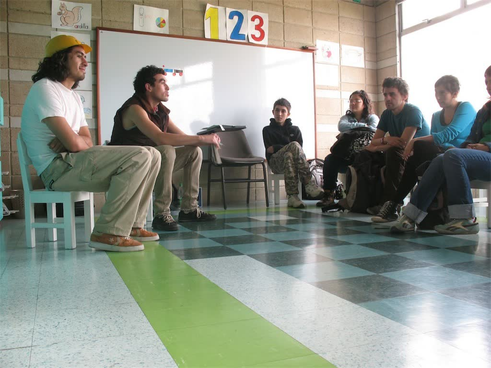
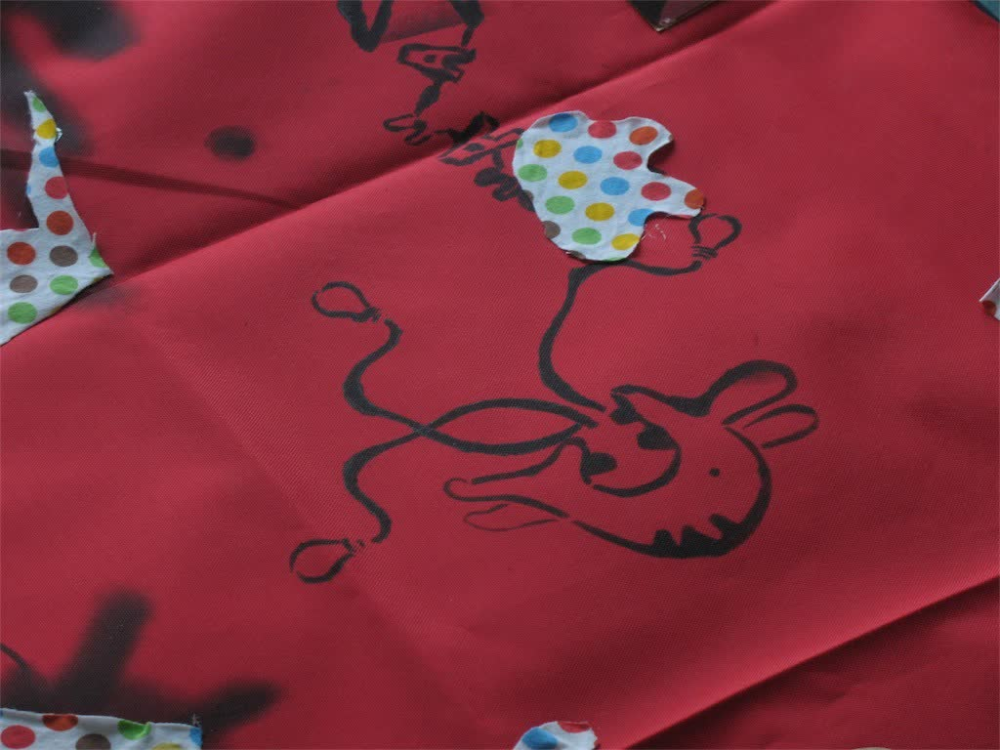
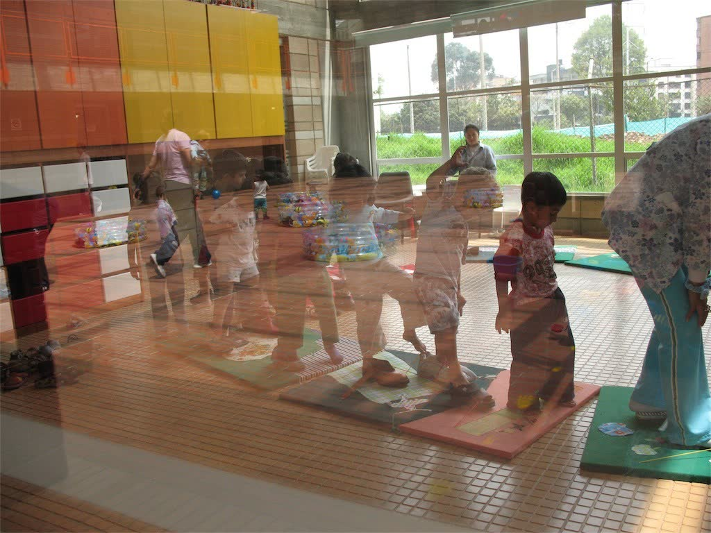
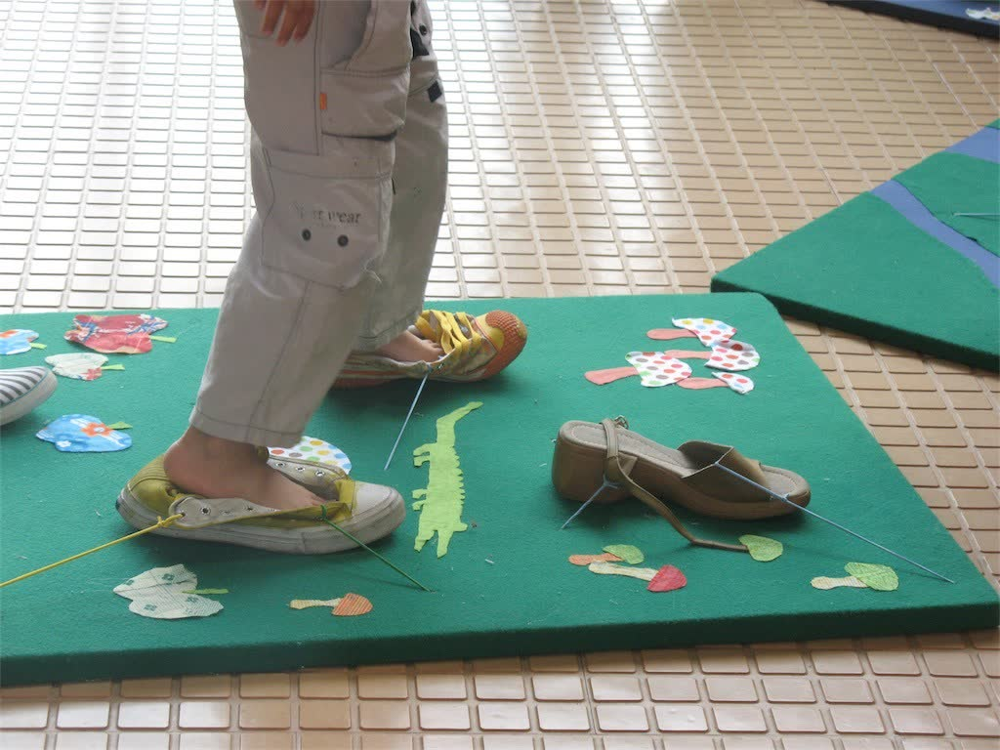
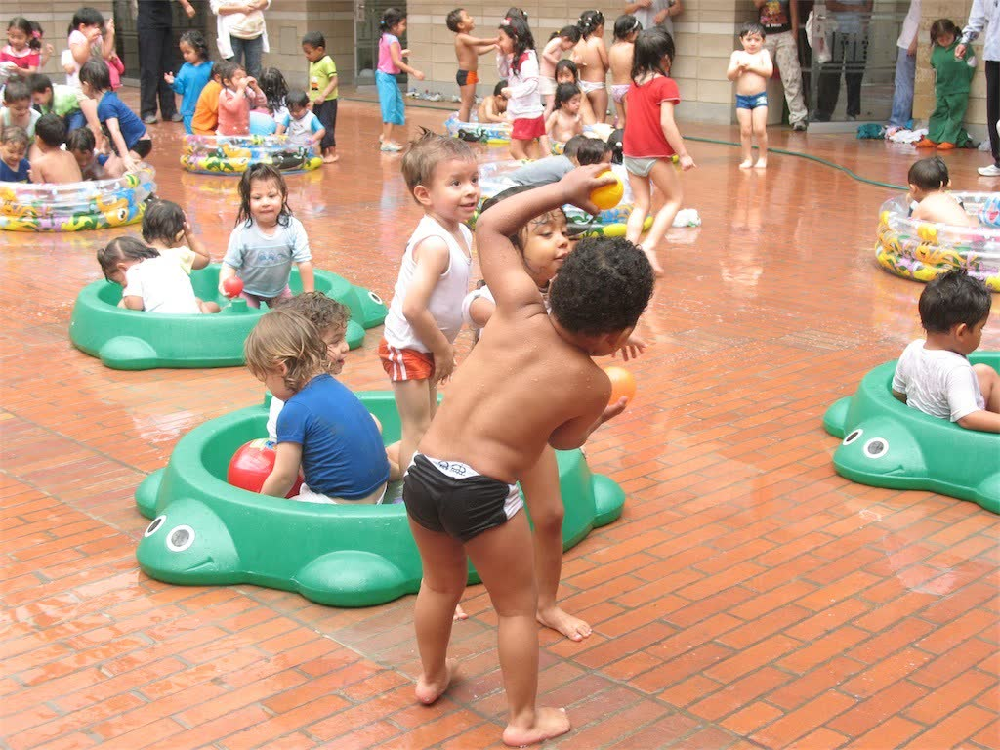
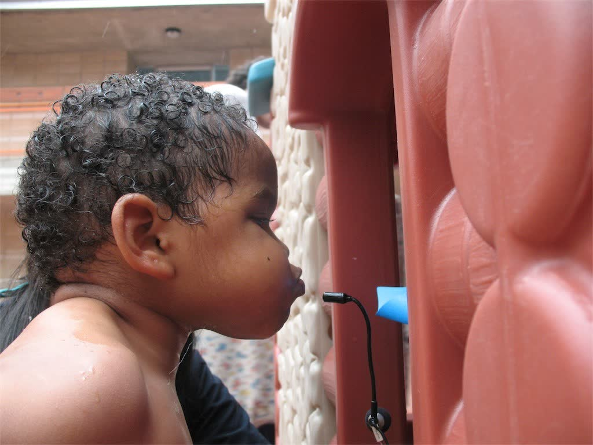
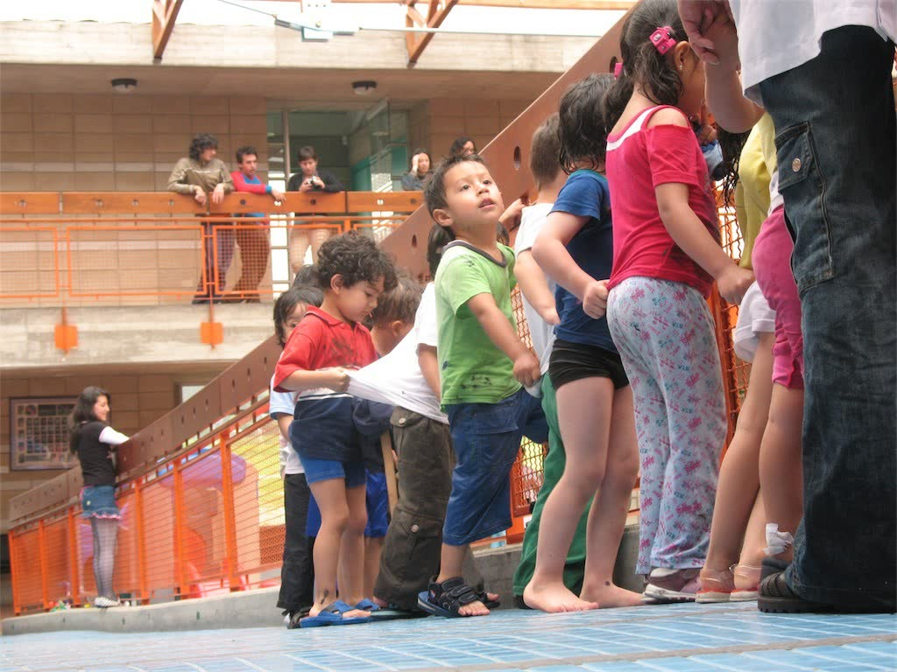
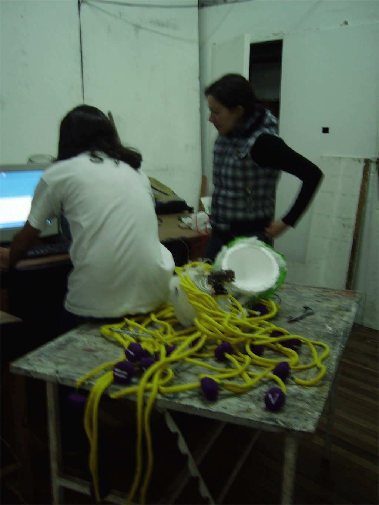
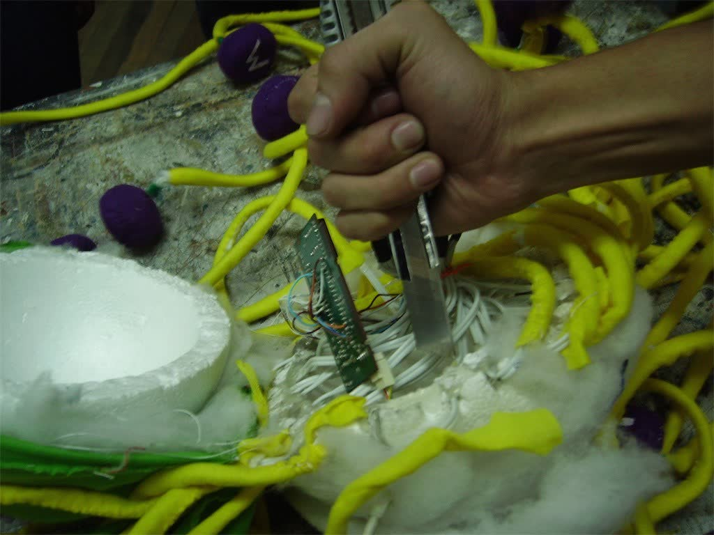

Costurero Eléctrico
- Date
- 2007
- Venue
- Universidad Nacional de Colombia
- Role
- Programmer, electronic artist
- Technologies
- Arduino, interaction programming
- Credits
- Directed by Esteban Rey

A multidisciplinary space for experimentation in interaction, electronics and the arts, led by Professor Esteban Rey at the Universidad Nacional de Colombia.







